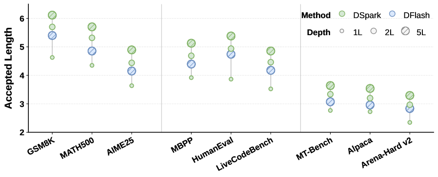
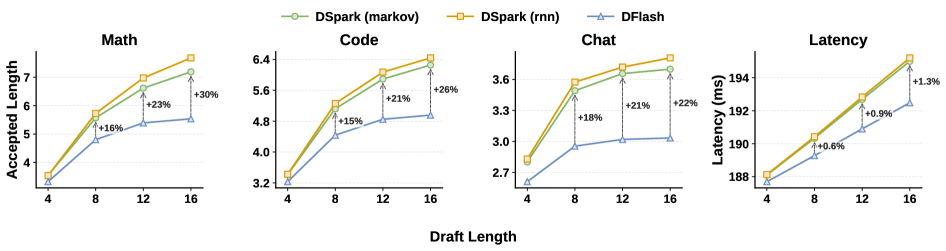

论文标题是 DSpark: Confidence-Scheduled Speculative Decoding with Semi-Autoregressive Generation， 由 DeepSeek-AI 与北京大学联合发表（arXiv:2607.05147）。它讨论的不是新的模型结构，而是 推测解码（Speculative Decoding）这个已经很成熟的加速范式里，两个长期被忽视的细节问题： 草稿模型内部的 token 依赖关系，以及验证长度的动态调度。读完本文，你应该能回答—— 为什么并行 drafter 会「虎头蛇尾」？DSpark 怎么用几乎不增加延迟的方式修复它？ 验证长度为什么不能是个固定数字？以及这一切在真实生产流量下到底值多少钱。
自回归解码慢；推测解码用 draft-verify 打破串行瓶颈，但 drafter 设计有取舍。
并行 drafter 的 suffix decay（质量）+ 固定验证长度的 waste（系统效率）。
半自回归生成 + 置信度调度验证，两个机制分别对症下药。
DeepSeek-V4 真实流量：Pareto 前沿外推，单用户提速 60%–85%。
一、从自回归瓶颈到推测解码
大语言模型自回归生成的本质约束是：每生成一个新 token，都要做一次完整的前向传播， 且这次传播依赖此前所有已生成的 token。这意味着推理延迟与输出长度成正比， GPU 利用率低、用户等待时间长，在实时对话、多轮 agent 等延迟敏感场景下尤其明显。
推测解码（Leviathan et al., 2023; Chen et al., 2023）给出了一个不牺牲精度的解法： 用一个轻量的草稿模型 \(M_d\) 一次性提议 \(\gamma\) 个候选 token，再让完整的目标模型 \(M_t\) 用一次前向传播并行验证整个候选块，通过拒绝采样接受与目标分布一致的最长前缀， 并额外生成一个 bonus token。因为验证是并行的、且接受规则严格保持目标分布不变， 推测解码可以在零质量损失的前提下换来速度提升。
具体来说，在草稿位置 \(k\)，目标模型计算自己的分布 \(p_k^t\)，与草稿分布 \(p_k^d\) 比较， token \(x_k\) 以概率 \(\min(1,\, p_k^t(x_k)/p_k^d(x_k))\) 被接受。验证是从左到右进行的： 一旦某个位置被拒绝，其后所有 token 无论质量如何都会被丢弃。设 \(\tau\) 为每轮平均接受的 token 数，\(T_{\text{draft}}\)、\(T_{\text{verify}}\) 分别为草稿与验证阶段的耗时， 则每 token 平均延迟为：
提升加速比，归根结底只有三条路：降低 \(T_{\text{draft}}\)（草稿更快）、 提高 \(\tau\)（草稿更准）、降低有效的 \(T_{\text{verify}}\)（验证更聪明）。 DSpark 的两个核心机制，恰好分别瞄准了后两条路。
二、两条路线的对撞：自回归 drafter vs 并行 drafter
草稿模型的架构设计，决定了 \(T_{\text{draft}}\) 与 \(\tau\) 之间如何权衡，现有方案大致分两类。
| 类型 | 代表工作 | 特点与代价 |
|---|---|---|
| 自回归 drafter | EAGLE / EAGLE-3 | 逐位置条件生成，依赖建模能力强，但 \(T_{\text{draft}} \propto \gamma\)，只能用浅网络、短 block。 |
| 并行 drafter | Medusa、DFlash | 一次前向输出全部 \(\gamma\) 个位置，\(T_{\text{draft}}\) 几乎与 block 大小无关，可以用更深的网络和更长的 block，但各位置相互独立预测。 |
DSpark 选择在最先进的并行 drafter DFlash（Chen et al., 2026）之上构建。 DFlash 的关键设计是 KV injection：在 prefill 阶段，从目标模型的若干层 \(\{l_1,\ldots,l_m\}\) 抽取隐藏状态并拼接投影：
这些上下文特征随后被拼接进每个草稿层的 K、V 序列维度，让 block 内所有位置都能双向注意到彼此、 以及注入的目标上下文。草稿模型输入是一个 anchor token（上一轮目标模型生成的最后一个 token） 加上 \(\gamma\) 个 mask token，一次前向即可产生全部 mask 位置的 logits——drafting 延迟几乎与 block 大小无关，这正是并行 drafter 能负担更深网络、更长 block 的结构性优势。
三、DSpark 要同时解决的两个问题
充分释放大 block 并行草稿的潜力，会同时暴露质量和系统效率两个瓶颈。
- 问题一：Suffix Decay（后段质量衰减）。 并行 drafter 独立预测每个位置，无法建模 block 内的 token 间依赖。当上下文允许多种合理续写时 （例如 "of course" 与 "no problem" 两种回答都成立），并行 drafter 可能拼出 "of problem" 或 "no course" 这类不连贯组合——因为每个位置边缘化了所有可能的前驱，而不是条件于某一个 实际采样出的前驱。这被称为 multi-modal collision，接受率会沿 block 迅速衰减， 浪费草稿和验证两端的算力。
- 问题二：Verification Waste（验证浪费）。 并行生成很容易吐出很长的草稿块，但不加区分地验证全部 token 会在高并发场景下显著拖累吞吐。 数据侧，代码这类结构化任务天然比开放式聊天有更高接受率；系统侧，轻负载时多验证一个 token 几乎免费，但高并发时每一次「注定被拒绝」的验证都在挤占其他请求本可使用的 batch 容量。
四、DSpark 架构总览：一个解码周期长什么样
在深入两个机制的细节之前，先看论文原图理解整个解码周期——这是全文最重要的一张图。

注意这张图里同时体现了 DSpark 的两个机制：EFGH 的生成方式（半自回归，下节详解） 和 「保留 EFG、丢弃 H」的调度决策（置信度调度验证，第八节详解）。 两者共同构成了一轮完整的解码周期：生成 → 打分 → 调度 → 验证 → 修正。
五、核心机制一：半自回归生成（Semi-Autoregressive Generation）
既然并行 drafter 的问题是「各位置互相看不见」，最直接的修复思路就是加回一点点依赖关系—— 但不能加太多，否则会重新引入 \(T_{\text{draft}} \propto \gamma\) 的串行瓶颈。 DSpark 把草稿生成拆成两个阶段：
5.1 并行阶段
并行 backbone（DSpark 沿用 DFlash）对整个 block 做一次前向传播，产生隐藏状态 \(h_1,\ldots,h_\gamma\) 和基础 logits \(U_1,\ldots,U_\gamma\)。DSpark 对原始 DFlash 做了一个小 改动：不再是「anchor + \(\gamma\) 个 mask token 只预测 mask 位置」，而是把 anchor 本身也当作第一个 预测位置，即 \(\gamma\) 个输入 token（anchor + \(\gamma{-}1\) 个 mask）产生 \(\gamma\) 个草稿 logits—— 这减少了草稿计算量，同时保持相近的草稿质量。
5.2 串行阶段：给每个位置补一个「转移偏置」
串行阶段用一个前缀相关的转移偏置 \(B_k(x_0, x_{<k}, x_k)\) 来修正基础 logits， 让每个草稿位置都能条件于 block 内此前已经采样出的 token。DSpark 没有定义一个全局归一化的能量模型， 而是通过自回归分解，直接构造一个因果的 block 分布：
推理时，串行块按 \(p_k(\cdot \mid x_0, x_{<k})\) 从左到右依次采样。因为这个采样过程本质上是串行的， 串行块必须足够轻量（\(T_{\text{sequential}} \ll T_{\text{parallel}}\)），才能保证整体草稿延迟仍由并行阶段主导。
5.3 Markov 头：一阶转移，低秩近似
最简单的实现是让 \(B_k\) 只依赖紧邻的前一个 token，退化为一阶转移 \(B(x_{k-1}, x_k)\)。 完整的 \(V \times V\) 转移矩阵太大，DSpark 用低秩分解 \(B = W_1 W_2\) 来近似：
其中 \(W_1 \in \mathbb{R}^{V \times r}\) 相当于一张 embedding 查找表，\(W_2 \in \mathbb{R}^{r \times V}\) 是 logit 投影，默认 \(r{=}256\)。低秩结构让存储和每步计算都很小，即使词表很大，串行循环依然高效。 回到前面的例子：一旦位置 1 采样出「of」，Markov 头就会在位置 2 提升「course」、压低「problem」， 从而缓解跨模态碰撞。
5.4 RNN 头：把记忆窗口拉长
Markov 头只能看到前一个 token，位置 \(k\) 访问不到 \(x_{k-1}\) 之前的信息。RNN 头引入一个 循环状态 \(s_k\)，累积 block 内的完整前缀历史。每一步把状态 \(s_{k-1}\)、前一个 token 的 embedding \(W_1[x_{k-1}]\)、以及 backbone 隐藏状态 \(h_k\) 拼接成输入向量，做一次门控更新：
实验发现 RNN 头相比 Markov 头只有边际收益（主要体现在更长的 proposal length 上）， 考虑到实现复杂度和部署友好性，DSpark 默认使用更简单的 Markov 头。
六、位置级证据：为什么并行反而能赢自回归？
论文里有一个反直觉的发现：并行 drafter（DFlash）和半自回归 drafter（DSpark）的整体接受长度， 往往比全自回归 drafter（Eagle3）更长——这与「逐步自回归生成质量更高」的常规认知相悖。 为了搞清楚原因，作者定义了位置级条件接受率（position-wise conditional acceptance）： 对于位置 \(k\)，只统计前面 \(1\) 到 \(k-1\) 全部被接受的样本，衡量这些样本中位置 \(k\) 也被接受的比例—— 这样就剥离了「前面已经错了」带来的惩罚，能看清每个位置本身的预测质量。

- 位置 1 的容量优势。 第一个草稿位置只依赖目标上下文，两类架构的差异纯粹来自网络容量：自回归模型受限于 \(O(\gamma)\) 的延迟只能用浅网络，而 \(O(1)\) 的并行 drafter 能负担更深的网络。 这让 DFlash 在位置 1 的准确率明显高于 Eagle3（例如 Math 上 0.88 对 0.81，Chat 上 0.72 对 0.53）。 由于推测解码是严格的前缀匹配过程，第一个 token 的杠杆效应最大——这里的优势会被放大到最终的整体接受长度。
- 后段独立性带来的局限。 观察位置 2 到 7，自回归模型能有效利用「前面已经锁定语义路径」这一条件确定性， 接受率保持稳定甚至提升（Chat 上从 0.53 升到 0.74）；而 DFlash 的接受率迅速衰减 （Code 上从 0.87 跌到 0.78，Chat 上从 0.72 跌到 0.63）——这正是 multi-modal collision 的直接体现。
- DSpark 两头兼得。 DSpark 继承了深层并行 backbone 在位置 1 的高接受率（Math 上高达 0.93）， 同时轻量串行头缓解了后段的快速衰减，使整个 block 的条件接受率保持高位且稳定。
七、消融实验：一点点自回归，收益很大
围绕 drafter 深度和 proposal length（block 大小 \(\gamma\)）两个维度，论文做了细致的架构空间探索 （均以 Qwen3-4B 为目标模型）。


在主结果表中（四个目标模型 × 三大领域），DSpark 相比自回归的 Eagle3，在 Qwen3-4B/8B/14B 上分别把 宏平均接受长度提升了 30.9% / 26.7% / 30.0%；相比并行的 DFlash，提升 16.3% / 18.4% / 18.3%，并且在 Gemma4-12B 上同样保持一致的增益，说明这个结构性优势 能跨模型家族泛化。同时，结构化任务（数学、代码）的接受长度天然高于开放式聊天——这也正是驱动置信度调度验证的关键动机。
八、核心机制二：置信度调度验证
半自回归架构能高效生成大块草稿，但草稿更多不等于端到端更快——不加区分地验证整个 block， 反而会在高并发场景下拖累系统吞吐。这个瓶颈来自两个交织的因素：数据侧不同领域的接受率天然不同， 系统侧每多验证一个 token 的实际代价严格取决于当前引擎负载。DSpark 用两部分来解决它： 置信度头预测前缀生存概率，硬件感知前缀调度器据此动态决定验证长度。
8.1 置信度头：预测「这个 token 能活到验证结束」的概率
置信度头为每个草稿位置 \(k\) 输出一个标量 \(c_k \in (0,1)\)，建模的是「在此前所有位置都被接受」的条件下， 位置 \(k\) 的 token 能通过目标模型验证的条件概率。结构是一个轻量线性投影加 sigmoid：
监督信号用解析形式的逐步接受率 \(c_k^*\)，由草稿分布与目标分布的总变差距离决定：
8.2 事后校准：Sequential Temperature Scaling
与只需要正确排序草稿质量的阈值类方法不同，DSpark 的硬件感知调度需要绝对数值准确的 累积接受概率来估计期望接受长度 \(\tau\)。神经网络的置信度估计通常是过度自信的，直接使用原始分数会扭曲 吞吐估计。DSpark 引入 Sequential Temperature Scaling（STS）：因为每个 \(c_i\) 建模的是条件概率， 链式法则要求草稿前缀被整体接受的联合概率等于累积乘积 \(\prod_{i \leqslant k} c_i\)。 STS 用留出验证集，从左到右逐位置做一维温度搜索，最小化累积乘积的期望校准误差（ECE）， 同时保持已校准位置的分数不变。关键是，温度缩放是保序变换——它只矫正绝对数值，不改变置信度头学到的相对排序。


8.3 硬件感知前缀调度器：把验证长度问题变成全局吞吐最大化
此前的方法大多对置信度分数设一个静态阈值来决定验证长度，这在孤立单请求假设下有效， 但在高并发生产系统里可能是次优的——因为验证一个草稿 token 的「性价比」严重依赖当前系统负载。 DSpark 把验证长度选择问题重新表述为一个全局吞吐最大化问题（Algorithm 1）。
考虑 \(R\) 个活跃请求的一个 batch。对请求 \(r\)，位置 \(j\) 的生存概率是累积乘积 \(a_{r,j} = \prod_{i \leqslant j} c_{r,i}\)。一次验证的总 batch 大小（以 token 计）为 \(B = \sum_r (1+\ell_r)\)，期望成功接受的 token 数为 \(\tau = \sum_r \bigl(1+\sum_{j=1}^{\ell_r} a_{r,j}\bigr)\)。 设 \(\text{SPS}(B)\) 为给定 batch 大小下引擎的吞吐（steps/秒，只需在引擎初始化时离线 profile 一次）， 调度器的目标是通过动态选择每个请求的验证长度 \(\ell_r\)，最大化系统级吞吐 \(\Theta = \tau \cdot \text{SPS}(B)\)。
看起来像组合搜索的问题，其实有高效的贪心解：因为 \(a_{r,j}\) 关于 \(j\) 单调不增， 把请求 \(r\) 的验证长度从 \(j{-}1\) 扩展到 \(j\) 带来的边际收益恰好是 \(a_{r,j}\)。 这意味着只要把所有候选 \((r,j)\) 按 \(a_{r,j}\) 全局降序排序，就能按最高「性价比」贪心纳入。
-
1
计算生存概率
对每个请求 \(r\) 的每个位置 \(j\)，计算前缀生存概率 \(a_{r,j} = \prod_{i \leqslant j} c_{r,i}\)。
-
2
构建全局候选池
所有 \((r,j)\) 组成候选集合 \(\mathcal{E}\)，按 \(a_{r,j}\) 全局降序排序。
-
3
初始化基线
每个请求先各占 1 个 anchor token：\(B{=}R\)，期望接受数 \(\tau^*{=}R\)，基线吞吐 \(\Theta_{\text{best}} = R \cdot \text{SPS}(R)\)。
-
4
贪心纳入（核心）
按排序依次纳入 \((r,j)\)：更新 \(\ell_r{\leftarrow}j\)，\(B{\mathrel{+}=}1\)，\(\tau^*{\mathrel{+}=}a_{r,j}\)，重新计算 \(\Theta = \tau^* \cdot \text{SPS}(B)\)。
-
5
提前停止
若 \(\Theta > \Theta_{\text{best}}\)，更新最优解并继续；否则立即 break——这一步同时保证了非预见性（不依赖尚未采样的 token）。
-
6
输出
返回每个请求的最优验证前缀长度 \(\ell_1^*,\ldots,\ell_R^*\)，对应达成的最大吞吐 \(\Theta_{\text{best}}\)。
九、训练目标：三个损失函数的协同
训练时从每条目标序列里随机采样多个 anchor 位置，构造 \(\gamma\)-token 的训练 block；目标模型全程冻结， 草稿模型共享并冻结目标模型的 embedding 层与语言模型头，只更新 backbone、串行块和置信度头。 三个损失项都用位置权重 \(w_k = \exp(-(k-1)/\gamma)\) 加权（更强调贡献更大的靠前位置）：
\(\mathcal{L}_{\text{ce}}\) 训练草稿模型预测正确的下一个 token；\(\mathcal{L}_{\text{tv}}\) 直接惩罚草稿分布与 目标分布的总变差距离——由于逐步接受概率恰好等于 \(1-\frac{1}{2}\lVert p^d-p^t\rVert_1\)，最小化它就是在 直接最大化期望接受率；\(\mathcal{L}_{\text{conf}}\) 则是一个二元交叉熵，监督置信度头去拟合公式 (8) 定义的 解析接受率标签。三者共同作用，让草稿模型「既要准，又要知道自己准不准」。
十、从论文到生产：DeepSeek-V4 的工程改造
算法设计只是一半，DSpark 与 DeepSeek-V4-Flash / V4-Pro 联合部署时，还需要解决训练和推理两端的系统级挑战。
10.1 可扩展的训练机制
训练草稿模型需要目标模型的输出分布做监督，全文档上下文双模型评估会带来巨大的显存和跨 worker 通信开销。 DeepSeek 在内部训练框架 HAI-LLM 中做了两个针对性优化：
- 隐藏状态通信。 直接跨 worker 传输目标模型的全词表 logits（\(V \approx 10^5\)）会造成严重的带宽瓶颈。 DSpark 改为临时缓存目标模型前向传播的激活值，只通信语言模型头之前的隐藏状态， 再在草稿模型所在的 worker 上，仅针对采样位置本地执行 LM head 投影——把每 token 通信复杂度降到 \(O(d)\)。
- Anchor-bounded 序列打包。 为了让草稿模型的计算量与目标模型的上下文长度解耦，DSpark 从训练序列中采样固定数量的 anchor， 把这些独立的预测 block 打包进稠密的训练 batch，并用 token 级的注意力索引（而非标准 2D mask） 管理打包过程，在避免 padding 开销的同时维持跨多个独立序列和 anchor 的精确因果掩码。
10.2 调度器工程化：与 CUDA Graph 和零开销调度共存
Algorithm 1 在理论上无损且优美，但直接部署会遇到两个现实冲突：真实硬件的 \(\text{SPS}(B)\) 曲线并非平滑单调， 而是充满台阶式跳变；同时，逐 step 动态调度候选数量，与连续的 CUDA Graph Replay 以及零开销调度（ZOS）机制天然冲突—— ZOS 要求下一步的 batch 大小在当前 step 完成之前就已知，同步式调度会直接卡住 GPU 流水线。
DSpark 的解法是让调度器异步运行：用「两步之前」的置信度头输出去估计即将到来的验证容量上限 \(K\)，本质上把纳入过程变成一个动态 top-\(K\) 选择——当前 step 的候选 token 依然按最新的累积置信度严格排序， 只是截断长度参考两步之前的历史预测。因为决策只依赖「已经实现」的历史信息，而非当前尚未采样的 token， 这天然构成了一道因果屏障，可以安全地去掉提前停止约束、做无约束的全局搜索来跨越硬件台阶， 同时依然保持目标分布精确无损。
此外，为了让变长验证前缀在物理执行层高效运行，DSpark 把跨请求的所有 token 打平、当作独立元素统一处理， 复杂的序列内依赖通过一个标记张量融入稀疏注意力实现——在 DeepSeek-V4 架构上，只需要修改 index-attention 和 compress 两个 kernel，即可让动态调度器无缝运行且不引入额外的底层开销。
十一、真实流量下的效果：Pareto 前沿被整体推开
DSpark-5（最大草稿长度 \(\gamma{=}5\)）在 DeepSeek-V4-Flash（preview）和 V4-Pro（preview）的生产 serving 引擎中，对比此前的生产基线 MTP-1（DeepSeek-V4-preview 发布两周后即被 DSpark 取代）。 之所以选 MTP-1 作对比：静态的多 token drafter（如 MTP-3/5）在高并发下会因验证开销过大而严重拖累聚合吞吐， 这正是 MTP-1 长期作为生产方案的原因——与它对比，直接验证 DSpark 能否在动态生产环境中安全释放大 block 的潜力。

| 部署环境 | SLA 锚点 | 相对 MTP-1 的变化 |
|---|---|---|
| V4-Flash | 80 tok/s/user | 聚合吞吐提升 51% |
| V4-Flash | 120 tok/s/user（严苛区间） | MTP-1 接近运行边界，DSpark 名义上高 661%——应理解为 DSpark 拓展了可行的交互性边界，而非在充分利用的基线上做等比提速 |
| V4-Flash | 匹配吞吐水平 | 单用户生成速度提升 60%–85% |
| V4-Pro | 35 tok/s/user | 聚合吞吐提升 52% |
| V4-Pro | 50 tok/s/user（严苛区间） | 同样的低并发效应，名义提升 406% |
| V4-Pro | 匹配系统容量 | 单用户生成速度提升 57%–78% |
换句话说：在中等 SLA 区间，DSpark 直接提升吞吐；而在基线几乎撑不住的严苛交互性要求下， DSpark 让原本不可能达到的性能档位变得可行——这才是「Pareto 前沿被整体推开」的真正含义。

在生产典型的中等并发区间（V4-Flash 低于 200 并发、V4-Pro 低于 150 并发），调度器会充分利用闲置的目标模型算力， 把验证预算从 MTP-1 固定的 2 个 token 扩展到约 4–6 个 token，直接带来更多的单次前向接受 token 数； 而随着并发规模上升、目标容量趋于饱和，调度器会平滑地收紧验证预算，确保低置信度的草稿 token 在挤占关键 batch 容量之前就被剪掉——轻载时榨干闲置算力，重载时守住关键容量，这正是 DSpark 在生产环境中保持稳定的机制。
结语：DSpark 改变了什么
DSpark 没有发明新的模型结构，也没有突破推测解码「无损」这条底线。它改变的是两处此前被视为「既定权衡」的设计： 草稿模型内部不必是纯并行的——一个几乎不增加延迟的轻量串行头，就能把多模态碰撞和后段衰减 大幅缓解；验证长度也不必是个固定超参数——把它重新表述为一个感知硬件负载的全局吞吐最大化问题， 就能在轻载时榨干算力、重载时守住产能。
更重要的是，这两个机制都经过了从算法设计到生产系统的完整打磨：异步调度器与 ZOS/CUDA Graph 共存、 变长验证的 kernel 适配、可扩展的训练通信优化——这提醒我们，推理加速的最后一公里，往往决定了一篇论文的 结论能否真正照进生产环境。
参考与扩展阅读
- DSpark: Confidence-Scheduled Speculative Decoding with Semi-Autoregressive Generation (Cheng, Yu, Shao, Li, Xiong et al., DeepSeek-AI & Peking University, 2026) 本文的核心依据，半自回归生成、置信度调度验证与生产部署细节均来自原论文。
- Fast Inference from Transformers via Speculative Decoding (Leviathan, Kalman & Matias, ICML 2023) 推测解码的奠基性工作之一，给出了 draft-verify-accept 与拒绝采样的基本框架。
- Accelerating Large Language Model Decoding with Speculative Sampling (Chen, Borgeaud, Irving et al., DeepMind, 2023) 与 Leviathan et al. 同期独立提出的推测采样方法，两者共同确立了这一范式。
- EAGLE-3: Scaling up Inference Acceleration of LLMs via Training-Time Test (Li, Wei, Zhang & Zhang, NeurIPS 2026) DSpark 论文中作为强自回归 drafter 基线对比的工作。
- DFlash: Block Diffusion for Flash Speculative Decoding (Chen, Liang & Liu, 2026) DSpark 并行 backbone 所基于的 SOTA 并行 drafter，KV injection 设计的原始出处。
Discussion